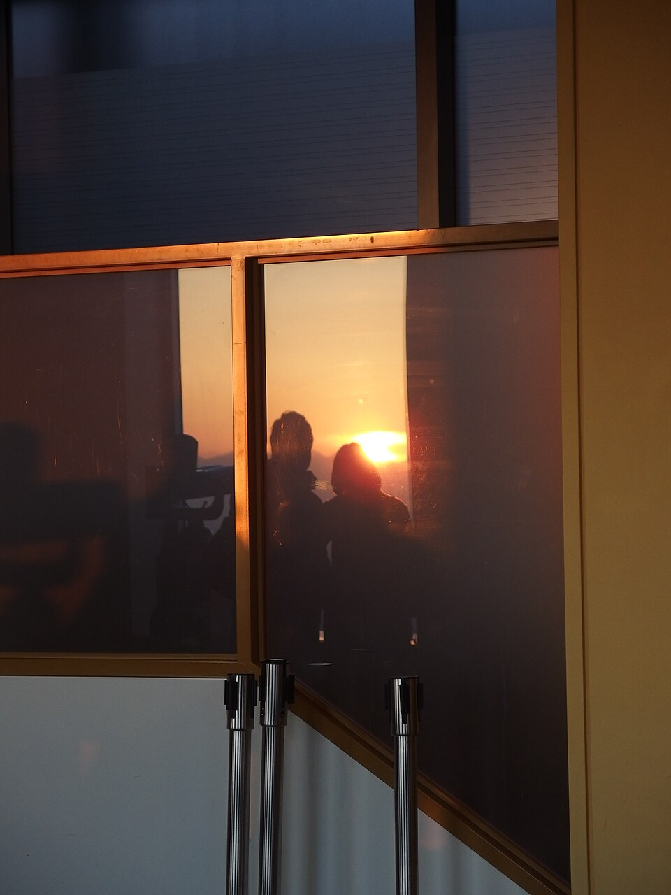
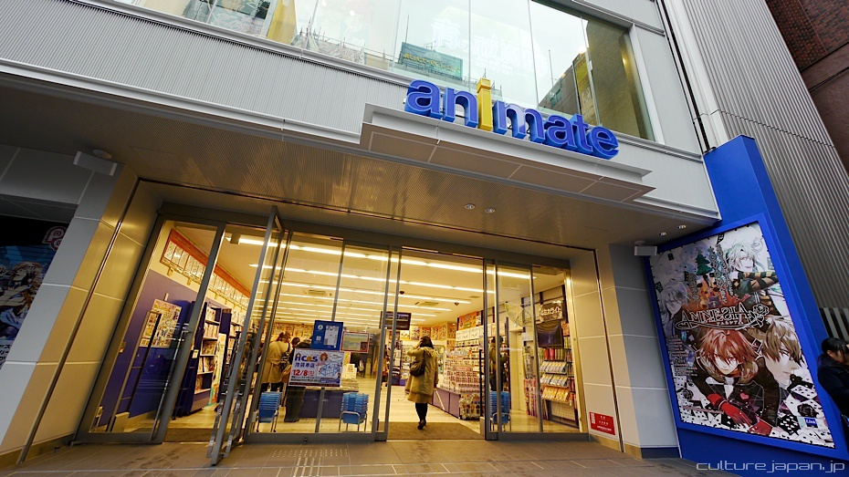
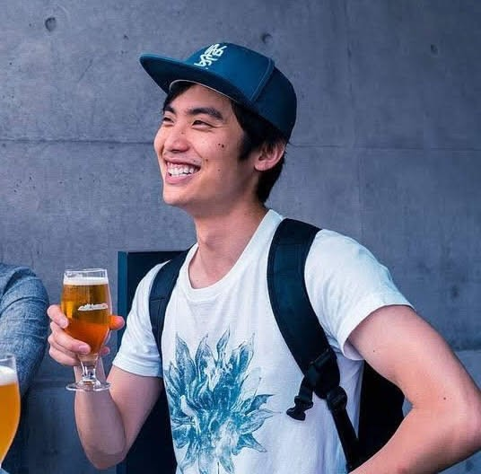

GUEST GUIDEIKEBUKURO · TOKYO
An evening in Ikebukuro



Anime · Games · Sunshine CityFun for the whole family
For Who this suits
Families and anime fans who want a fun, easy evening — especially anyone who has already done Akihabara and wants the other otaku capital.
Why Ikebukuro is different
Akihabara is a maze of small specialist shops. Ikebukuro puts the flagships in one place: Japan's largest Pokémon Center, the Animate flagship and the world's biggest gashapon hall, all a few minutes apart on the east side of the station.
Where Everything is close
Every stop on this page is on the east side of Ikebukuro Station, and most of them are inside one complex — Sunshine City. No trains in between, no long walks.
Good to know Evening friendly
Most shops stay open until 20:00 or 21:00, so this works as an evening plan after a day elsewhere. The big stores have tax-free counters — bring passports. Nothing on this page involves alcohol, so younger guests are fine at every stop.
Anime & games
6 STOPS
Ikebukuro's side of otaku Tokyo — bigger flagships, less maze. Pick any of them, in any order.
Pokémon Center Mega Tokyo
10:00 – 20:00
ポケモンセンターメガトウキョー
Japan's largest Pokémon Center, and the one fans cross the city for: limited Mega Tokyo goods, a Charizard statue for photos, and the Pikachu Sweets takeout counter on the same floor. On the same floor sits the Mugiwara Store, the official One Piece shop — two flagship stores in one stop.
Sunshine City Alpa 2FOpen 10:00 – 20:00
Mugiwara Store
10:00 – 20:00
麦わらストア 池袋店
The official One Piece store, a few steps from the Pokémon Center inside Sunshine City (the photo shows the Sunshine City atrium). Store-only goods and a Thousand Sunny photo spot — an easy win for One Piece fans without a second trip across town.
Sunshine City Alpa 2FOpen 10:00 – 20:00
Gashapon Department Store
10:00 – 21:00
ガシャポンデパートメント池袋総本店
Over 3,000 capsule-toy machines in one hall — billed as the largest gashapon store in the world. Anime, games, tiny food, weird animals: everyone finds a series to chase. The Bandai Namco Cross Store on the same floor covers the One Piece Card Game and Tamashii Nations figures.
Sunshine City, World Import Mart 3FOpen 10:00 – 21:00
Animate Ikebukuro
10:00 – 21:00
アニメイト池袋本店
Nine floors — one of the biggest anime shops in Japan, and Animate's flagship. New manga, figures, CDs and limited goods across every series, plus event spaces upstairs. If Akihabara is a maze of small shops, this is the department-store version.
2 min from Sunshine CityOpen 10:00 – 21:00
JUMP SHOP
11:00 – 21:00
ジャンプショップ 池袋店
The official Weekly Shonen Jump store, right at the station in PARCO: One Piece next to Naruto, Dragon Ball and Jujutsu Kaisen, with items sold nowhere else. A compact last stop on the way back to the trains. (Photo shows another JUMP SHOP branch.)
Ikebukuro PARCO B2F, at the East ExitOpen 11:00 – 21:00
BOOKOFF Sunshine 60 Street
10:00 – 22:00
ブックオフ サンシャイン60通り店
Two floors of second-hand manga, figures, anime goods and Pokémon cards on the main Sunshine 60 strip (in the photo). The treasure-hunt stop: out-of-print volumes and bargain figures that never reach the flagship stores.
Sunshine 60 StreetOpen 10:00 – 22:00
Sunshine City, after dark
3 STOPS
The same complex also holds a rooftop aquarium, a planetarium and a 60th-floor observatory — the calm half of the evening.
Sunshine 60 Observatory TENBOU-PARK
11:00 – 21:00 · last entry 20:30
サンシャイン60展望台 てんぼうパーク
The observatory at the top of Sunshine 60, 251 metres up, rebuilt as an indoor park — lawn, benches and big sky. Open until 21:00, so it is the natural way to finish an evening: sunset over the city, then the night view, without leaving the building.
Sunshine 60, 60FOpen 11:00 – 21:00 · last entry 20:30
Sunshine Aquarium
10:00 – 18:00 in winter
サンシャイン水族館
An aquarium on a rooftop, famous for the Sky Penguin tank where penguins appear to fly over the city, and sea lions swimming in a ring tank above your head. It closes earlier than the shops, so it suits the late-afternoon end of the plan.
World Import Mart rooftopOpen 10:00 – 18:00 in winter
Planetarium MANTEN
Shows 11:00 – 20:00
コニカミノルタプラネタリウム満天
Konica Minolta's dome theatre, also on the World Import Mart rooftop: reclining seats, a star field over the whole ceiling, and programmes with music. A calm, sit-down hour that rests everyone's feet before dinner.
World Import Mart rooftopOpen Shows 11:00 – 20:00
Dinner
9 PICKS
All nine are family friendly — sushi is the easy favourite. Tap a tile to open it in Google Maps.

Yuuki Ichihara
“Anime Sensei” — anime & game tour guide, Tokyo
I guide anime fans around Akihabara and Ikebukuro — the shops, the arcades, the places only locals queue for. Ikebukuro is my second home turf: bring me a group that loves anime, games or Pokémon, and I will shape the evening around what they like.
★4.96 · 171 reviews on Airbnb
animesenseijp.com
Photo credits & notes
Photos via Wikimedia Commons: Pokémon Center Mega Tokyo entrance (Maplestrip, CC BY 3.0); Sunshine City atrium (CC BY 2.0); gashapon machines (CC BY-SA 3.0); Animate Ikebukuro (CC BY-SA 2.0); JUMP SHOP storefront, another branch (CC BY 2.0); Sunshine 60 Street (CC BY-SA 2.0); Sunshine Aquarium and Sunshine 60 Observatory (Guilhem Vellut, CC BY 2.0); Planetarium MANTEN (via Wikimedia Commons). Dinner photos are examples of the dishes: salmon nigiri sushi (Think Draw, CC BY 2.0), tonkotsu ramen (Wesoree, CC BY-SA 4.0), hamburg steak (OiMax, CC BY 2.0), shabu-shabu pot (cyclonebill, CC BY-SA 2.0), tonkatsu set (Ocdp, CC0), gyukatsu on a stone plate (Pocsywe, CC0), okonomiyaki (ume-y, CC BY 2.0), yakiniku grill (Jonathan Lin, CC BY-SA 2.0), tendon at Tenya (CC0). Opening hours checked against official sites in November 2026 and can change. This is a general guide page — no fixed route, order or schedule.